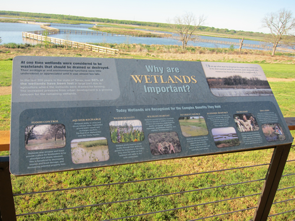

Constructed Wetlands
What is it?
Constructed wetlands can be created at a variety of locations and at various sizes depending on the intended use and function of the wetland. Intended uses can include replacing lost or drained natural wetlands, creating waterfowl and wildlife habitats, areas for water infiltrations, areas for stormwater nutrient and chemical removal, and large systems for municipal reuse and use of water.
 Wetlands information sign at John Bunker Sands Wetland Center (photo from TPWD)
Conservation Benefits
- Protection of aquatic and terrestrial habitat
- Protection of native species
- Protection of water quality
- Increased knowledge of watershed conservation issues
- Increased participation in conservation activities
What does it include?
Artificially constructed wetlands are usually designed in low lying ares that would naturally accumulate water. These systems are built to mimic natural wetlands in layout, plant/fish/and wildlife communities, and function. Wetlands allow the settling of sediments and large particulates out of the water and can improve water quality by sequestering nutrients into plants. Urban areas use artificial wetlands for stormwater management, sequestering chemicals and nutrients, and creating wildlife and water fowl habitat. Agricultural areas create wetlands to settle out sediments, nutrients, and chemicals from water runoff before the water enters streams. However, since constructed wetlands are effective at removing nutrients and chemcials, consideration should be given to the potential impacts of chemical and nutrient accumulation in the wetlands and their impact on dependant plants and wildlife.